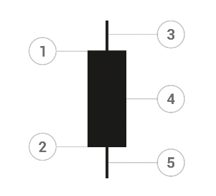
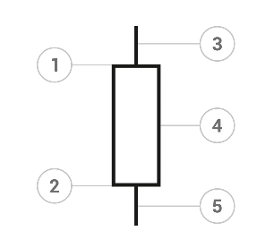
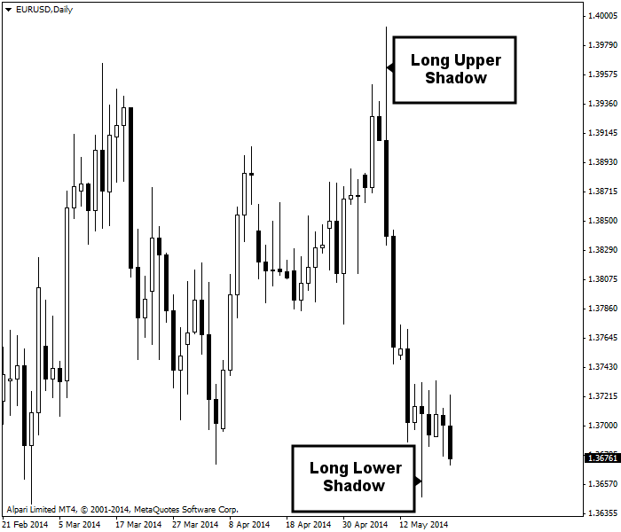

<!DOCTYPE html>
<html>
</html>
<head>
  <meta charset="utf-8">
  <meta http-equiv="X-UA-Compatible" content="IE=edge">
  <title>外汇站（fx-z.com） - 日本蜡烛图结构</title>
  <meta name="description" content="">
  <meta name="viewport" content="width=device-width, initial-scale=1">
  <meta name="robots" content="all,follow">
  <!-- Bootstrap CSS-->
  <link rel="stylesheet" href="vendor/bootstrap/css/bootstrap.min.css">
  <!-- Font Awesome CSS-->
  <link rel="stylesheet" href="vendor/font-awesome/css/font-awesome.min.css">
  <!-- Google fonts - Roboto-->
  <link rel="stylesheet" href="https://fonts.googleapis.com/css?family=Roboto:400,300,700,400italic">
  <!-- owl carousel-->
  <link rel="stylesheet" href="vendor/owl.carousel/assets/owl.carousel.css">
  <link rel="stylesheet" href="vendor/owl.carousel/assets/owl.theme.default.css">
  <!-- theme stylesheet-->
  <link rel="stylesheet" href="css/style.default.css" id="theme-stylesheet">
  <!-- Custom stylesheet - for your changes-->
  <link rel="stylesheet" href="css/custom.css">
  <!-- Favicon-->
  <link rel="shortcut icon" href="img/favicon.png">
  <!-- Tweaks for older IEs--><!--[if lt IE 9]>
    <script src="https://oss.maxcdn.com/html5shiv/3.7.3/html5shiv.min.js"></script>
    <script src="https://oss.maxcdn.com/respond/1.4.2/respond.min.js"></script><![endif]-->
</head>
<body>
  <div id="all">
    <div class="container-fluid">
      <div class="row row-offcanvas row-offcanvas-left"> 
        <!--   *** SIDEBAR ***-->
        <div id="sidebar" class="col-md-4 col-lg-3 sidebar-offcanvas">
          <div class="sidebar-content">
            <h1 class="sidebar-heading"> <a href="https://fx-z.com">fx-z.com</a></h1>
            <p class="sidebar-p">介绍外汇相关的基本知识，告诉您如何进行自己的技术面和基本面分析，讲解先进的交易理念，并且为您阐述失败交易者与专业交易者之间的真正区别。 </p>
            <p class="sidebar-p">通过这些课程的学习，您将学会如何根据自己的优势来应用情绪分析，还将了解真实世界的事件会对货币汇率产生什么影响，央行在外汇市场中所发挥的作用，以及交易者在颇受欢迎的即期外汇交易中有哪些选择方案。 </p>
            <ul class="sidebar-menu">
                <!-- Link-->
                <li class="sidebar-item"><a href="https://fx-z.com" class="sidebar-link">首页</a></li>
                <!-- Link-->
                <li class="sidebar-item"><a href="cihui.html" class="sidebar-link">外汇词汇</a></li>
                <!-- Link-->
                <li class="sidebar-item"><a href="ebook.html" class="sidebar-link">获取外汇电子书</a></li>
            </ul>
            <p class="social"><a href="https://www.forextimechina.com.cn/zh?form=IZIN" target="_blank"data-animate-hover="pulse" class="external facebook"><i class="fa fa-eur"></i></a><a href="https://www.forextimechina.com.cn/zh?form=IZIN" target="_blank" data-animate-hover="pulse" class="external gplus"><i class="fa fa-gbp"></i></a><a href="https://www.forextimechina.com.cn/zh?form=IZIN" target="_blank" data-animate-hover="pulse" class="external twitter"><i class="fa fa-rmb"></i></a><a href="https://www.forextimechina.com.cn/zh?form=IZIN" target="_blank" title="" class="external instagram"><i class="fa fa-dollar"></i></a><a href="https://www.forextimechina.com.cn/zh?form=IZIN" target="_blank" data-animate-hover="pulse" class="email"><i class="fa fa-money"></i></a></p>
            <div class="copyright text-center text-md-left">
             
              
            </div>
          </div>
        </div>
        <!--   *** SIDEBAR END ***  -->
        <!--   *** DETAIL ***-->
        <div class="col-md-8 col-lg-9 content-column white-background">
          <div class="small-navbar d-flex d-md-none">
            <button type="button" data-toggle="offcanvas" class="btn btn-outline-primary"> <i class="fa fa-align-left mr-2"></i>菜单</button>
            <h1 class="small-navbar-heading"> <a href="https://fx-z.com/6-2.html">下一篇 </a></h1>
          </div>
          <div class="row">
            <div class="col-xl-10">
              <div class="content-column-content">
                <h1>日本蜡烛图结构</h1>
       <p>
    与传统图表相比，日本蜡烛图结构有一个巨大的优势。常规图表只是一条垂直线，而蜡烛图有一个矩形“实体”，因而使蜡烛图的形状显得更大。当收盘价高于开盘价时，实体为白色。当收盘价低于开盘价时，实体为黑色。一系列同颜色实体具有直接的视觉效果。
</p>
<p>
    蜡烛图注重开盘价和收盘价，而不是普通图表所注重的最高价和最低价。蜡烛图包括一个被称为实体的矩形。最高价和最低价由绘制在实体顶部和底部的垂直线表示。这些线被称为影线，不过有时候它们也被称为烛芯（如蜡烛芯）和尾线等其他名称。
</p>
<p>
    实体顶部为开盘价或收盘价，而且您可以立刻知道市场情绪是积极还是消极，因为如果实体为白色，则收盘价高于开盘价。黑色蜡烛代表收盘价低于开盘价。如果您见到一系列白色蜡烛，这意味着收盘价持续高于开盘价；与之相反，一系列黑色蜡烛意味着市场情绪持续消极。
</p>
<p>
    如蜡烛图课程所述，您会见到绿色、红色或其他颜色组合的蜡烛图；其中，暗色版本总是表示收盘价更低，亮色版本总是表示收盘价更高。有些作者将白色蜡烛称为“空心”，将黑色蜡烛称为“实心”。
</p>
<p>
    如下列两个图表所示，除了开盘价与收盘价颠倒以外，黑色蜡烛与白色蜡烛在每个方面都非常相似：
</p>
<p>
     黑色（看跌）蜡烛图
</p>
<p>
    1 开盘价； 2 收盘价； 3 上影线； 4 实体； 5 下影线。
</p>
<p>
     白色（看涨）蜡烛图
</p>
<p>
    1 收盘价； 2 开盘价； 3 上影线； 4 实体； 5 下影线。
</p>
<p>
    <strong>大小问题</strong>
</p>
<p>
    实体越大，则买入或卖出压力也越大。烛台较短意味着各个方向的活动都不多。实体较小意味着交易者对市场方向缺乏信心。十字星蜡烛图的开盘价与收盘价相同或者几乎相同，代表着市场的不确定性。
</p>
<p>
    影线长度同样有影响。上影线代表时段最高价，下影线代表时段最低价。烛台较短说明交易活动聚集在开盘价与收盘价之间。上影线缺失说明价格收盘于最高价，多头强势，而且或许下一个烛台偏向于看涨。同样，下影线缺失说明价格收盘于最低价，开盘价将走低，而且或许最低价也将创下新低。
</p>
<p>
    上影线较长说明多头势力试图走高，但未能成功。货币收盘价正好低于最高价。同样，烛台下影线较长表示空头势力失败。货币价格创下新低，但未在此处收盘。正因如此，长影线在外汇中极为有用——可以显示多空势力中哪一方落败。
</p>
<p>
    下图显示多空之间的“较量”。首先，我们见到黑色烛台带有长上影线，其收盘价远低于前一个烛台。这确切地表明，虽然两周多的时间内，多头占据上风、屡创新高而且收盘于高位，但多头已经失势。果然，下一根烛台为黑色，代表最低价将屡创新低，而且收盘价也逐步走低。但之后又出现了一根带有长下影线的烛台。说明空头卖出势力已经枯竭。烛台仍然是黑色，收盘价低于开盘价，但这一走势即将停止。如果您在这波行情中扮演卖出者的角色，那么您或许希望在此时离场。请注意，下影线较长并不一定代表跌势结束。它可能会暂停一段时间，然后重拾走势（或者折回涨势）。长下影线并未告诉我们后续走势；它只是传递本段走势结束的信号。请注意，两个时段之后，我们见到一个白色烛台；其最高价创下新高，而且收盘于更高的价格。
</p>
<p>
     上影线较长与下影线较长均代表走势结束。
</p>
<p>
    <br/>
</p>
<p>
    <br/>
</p>
              </div>
            </div>
          </div>
        </div>
      </div>
    </div>
  </div>
  <!-- JavaScript files-->
  <script src="vendor/jquery/jquery.min.js"></script>
  <script src="vendor/popper.js/umd/popper.min.js"> </script>
  <script src="vendor/bootstrap/js/bootstrap.min.js"></script>
  <script src="vendor/jquery.cookie/jquery.cookie.js"> </script>
  <script src="vendor/owl.carousel/owl.carousel.min.js"></script>
  <script src="vendor/masonry-layout/masonry.pkgd.min.js"></script>
  <script src="js/front.js"></script>
</body>